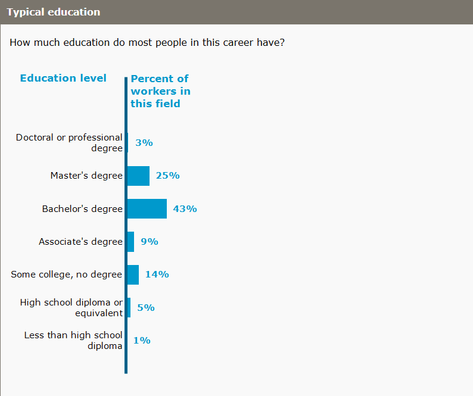

Prerequisites
People starting in this career usually have:
- Bachelor's degree
- Less than 5 years work experience
- No on-the-job training

Programs that can prepare you include:
- Computer Science
- Computer Systems Networking and Telecommunications
- Computer and Information Systems Security/Auditing/Information Assurance
- Cyber/Computer Forensics and Counterterrorism
- Healthcare Information Privacy Assurance and Security
Some states require an occupational license to work in CyberOps.
Apprenticeships in CyberOps combine paid on-the-job-training with classroom lessons.